| Match Report - 30 May 2009 |
|
|
|
|
|
|
|
| U6 Purple |
North Ryde 6 - Macquarie Dragons C 7

|
|
|
|
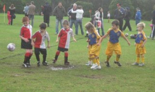
After a rain-out the previous week, the team was ready to give it another go. The
start time 8:15 was again a challenge, but we all made it just in time. Unfortunately
Cameron could not make it due to the flu. We hope he will
recover soon so that he can be there for next week.
The manager brought the new shirts, and didn't they look good. Our proud North Ryde
youngsters looked the part. The new challenge this week was the wet pitch with some
muddy puddles. 'Don't worry about it that is part of soccer', were the words of the
Coach.
The team shook hands before the game, which set the scene for a friendly match. The
kids started the game really well. The dragons were an even match and the game was
flowing up and down the field. With that the kids had to do quite a bit of running.
Jasmine did some excellent kicks and kept on defending.
Jayden made a short appearance, and made sure at half-time
the 'Player of the week' trophy was returned.
With some excellent running, follow up, good passing and dribbling the team scored
quite a number of goals. High fives were flying around everywhere. The goals fell on
both sides and at half-time North Ryde and Macquarie felt they had achieved a lot.
The second half continued in the same pace. Luka was all
over the field, defending, passing and scoring. It was a great all round performance.
Lucas had a good block in midfield and came up with the ball
and running it a goal. He just missed. Will kept his eye on
the ball and never gave up. At the end the draw was so close, with the final shot of
Luka hitting the post.
The whole team made a great effort

Congratulations to the Player of the Week - Luka
- Marc van Hilten (Coach)
|
|
|
| U6 Red B |
North Ryde Red B - North Ryde Red C

|
|
|
|
After another frustrating period of no training or game the week prior to this
inter-club 'clash', our guys were once again slightly under prepared but the thought
of playing against some of their training partners was (or should have been) motivation
enough. Our opponents did appear to have our measure in the size stakes but this seems
to be the situation most games and doesn't appear to bother our little troopers.
There were ominous signs early when our opponents started to make early in roads into
our defence but some slick defending from Dominic and
Emma was keeping them at bay. The heavy conditions meant
that passing was going to be a difficult task so our team kept the ball in nice and
tight with Jake and Ben doing
some solid work in a lot of traffic.
The introduction of our super subs Erin and
Felix gave the team some fresh legs when they were needed
and some go forward. Felix picked up where he left of last
game by really getting involved and Erin once again followed
coach Chris's instructions to the letter by kicking the ball into open space
(unfortunately no one chases it... from our team that is).
Dominic was displaying some terrific skills under pressure,
using the kick-back move to good effect to stop some of our opponents raids whilst
Ben was playing a blinder getting the team going forward
and unlucky not to put a few in the net himself.
Our Player of the Match this week was
Emma who richly deserved the award for some great play
in both attack and particularly her defensive effort. Often when we were creating a
chance at goal or a last ditch tackle was needed, Emma
was involved in the action.
Unfortunately, the stop-start nature of the season so far has made it difficult for
our team to really build any sort of cohesion but again, there are very encouraging
signs in most facets of the game that just need to come together and Chris is slowly
building a very talented unit. Thanks to Jes for yet again providing the half time
refreshments and to Chris for encouraging the players at all times.
Well done also to Ken and the 'C' team for a wonderful game. They are a very talented
group and hopefully can inspire our team to reach the same level.
- Paul Bonaventura
|
|
|
| U6 Red C |
|
North Ryde Red C - North Ryde Red B
|
|
|
|
We got the ball and we scored lots of goals. We did good passing. The best players
were Luke and me.
- Kate Kennedy (Player)
|
|
|
| U7 White |
|
North Ryde 1 - Ryde Saints United B 4
|
|
|
|
Despite an early start and a cold morning which was preceded by an evening of pouring
rain the Boys turned up and eager to play. The first half was a close encounter,
sprinkled with great play showcasing the young lads emerging skills, and team play.
Buried in the North Ryde half Jason was instrumental in stopping the Saints United
crew from scoring. The boys tried hard to follow the game plan of playing up the
sideline but caught back in defence and struggling, Saints United scored a sizzler
of a goal. Then shortly after through a maze of tireless North Ryde defence, they
scored again.
The second half, saw Angus power through a shot at goal, only to have it just roll
wide. Yet, shortly after, the fighting North Ryde spirit prevailed with Ben tackling
the ball from the opposition followed by his sizzling shot which flew straight into
the net for North Ryde’s first goal. The score stuck at 2-1, North Ryde scrambled
defiantly and proudly in defence, with strong kicks from Raphael, one clearing kick
near our goal dented the Saints United onslaught. Disheartingly, Saints United
struck with 2 quick goals. But, in defiance of the score, Hugh, Ben and Henry, helped
by William, Jason and Ben kept pushing forward, constantly trying to break free to get
another well deserved goal, as Angus - again, showing his great covering defence, came
through and preventing an Saints United attack.
With the game over North Ryde had displayed a fighting and spirited heart, made all
the more rewarding by the sight of our young cubs showing their emerging talents,
athletic skill, perseverance and the joy of playing with each other. Well done Boys,
and good luck with the next one.
- Vincent Fimmano
|
|
|
|
|
|
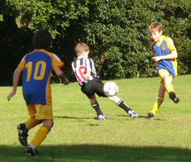
Despite the churned-up cricket pitch and small lake that made up the centre of the
football pitch at Boronia Park, the U9 Div 1's were spared a few hours of clear sky
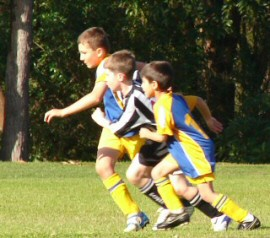
during an otherwise gloomy weekend to stretch their legs and ply their trade against
a motivated Gladesville Ravens outfit this morning.
The game was played at pace from the word go, with both sides moving the ball up
and down the field at speed as they sized each other up and tried to claim some
dominance in the game. But after a few minutes it was evident that North Ryde had
established an edge over their opponents and were able to control the run of play
for most of the first half at will.
Young Anthony frustrated the forwards in the midfield, and no man or beast ventured
too close to Harrison when he came charging in with his swinging right foot. The
defence held rock-solid, which must have frustrated Charlie in his first-half spell
as goal keeper, who even under normal circumstances feels uncomfortable without the
ball hovering somewhere around his feet
North Ryde's passing game during the first half was superb, and they moved the ball
from the backs through the midfield to the forwards with spectacular speed. Jack was
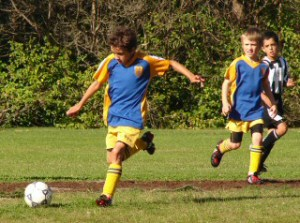
a telling factor on the right wing and generally had the final say on who would win
the ball and which direction he'd prefer it to go.
Not much gets past Tom Maclean either, whose effective tackling and precision passes
always contribute to a surge toward the goals. He linked up well in the midfield with
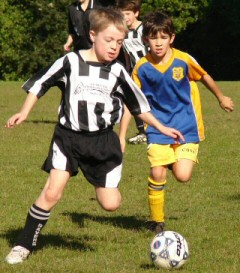
David, who seemed to be wherever the ball was, and who used his speed and agility to
thread his way through the defence and feed the ball into the danger zone.
It didn't take long before North Ryde were rewarded for their efforts with several
shots at goal. One of which came when Tom Hurst took advantage of a deflected ball
with a terrific strike from about thirty metres out which would have added quite
nicely to the scoreboard if it hadn't been for the safe hands of the in-form Ravens
keeper whose saves were proving to be as good as his massive clearance kicks downfield.
But North Ryde persisted nonetheless, and a smooth succession of terrific passes from
the right side of the field saw the ball move swiftly from David in the midfield to
Eli in the front pack, and switch again to the last man in the line, Adam, who struck
the ball cool as you like with power and a low trajectory into the bottom right
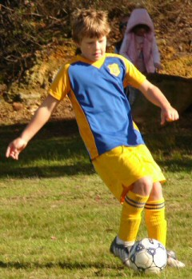
corner of the net. It was one of North Ryde's best and most well orchestrated goals
of the season so far
North Ryde continued to play the remainder of the first half in a now familiar
fashion. The backs were rock-solid in their defence and were as quick to smother any
scoring opportunities by the Ravens as they were to launch a new counter-attack. The
speedsters in the midfield raced the ball into the danger zone within seconds and
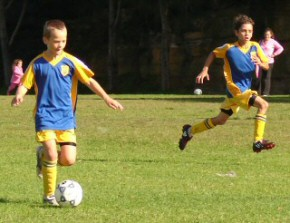
the forwards relished their opportunity to seal the transaction.
One of the most encouraging aspects of the North Ryde game is their continued sense
of ball control and maintaining possession. Balls are being stopped, trapped and
moved again with authority, and any loose or wild kicks are fast becoming the
exception to the rule. The first half belonged to North Ryde, who went on to enjoy
several more shots at goal that were well taken by the Ravens keeper before the
half-time whistle blew.
The second half had a slightly different colour to it. The slick passing game that
had defined the North Ryde success in the first half seemed to desert them and there
was a lot more jostling and scrambling for the ball to keep a rejuvenated Ravens team
at bay.
Eli had taken up the goal-keeping duties in the second half and was put to the test
several times as the Ravens came storming up to the goals, deperate to settle the
score. On one occasion he made a terrific save that involved stopping a powerball
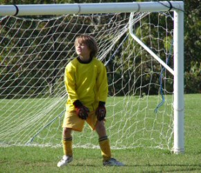
destined for the back of the net in midflight, and a scramble to keep it off the
goal line after the initial deflection. What a save!
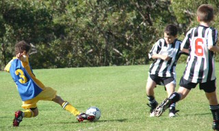
Suddenly North Ryde seemed to be on the back foot and you got the feeling that the
next goal might decide the match. The sidelines became more vocal as the supporters
in each camp urged their teams on, and Pauline had her work cut out exchanging players
at the right time and offering timely advice to the game in progress.
But despite the apparent change of fortune, North Ryde kept their foot on the pedal.
Fitness and stamina were still their best friends and their efforts to hold onto the
match were relentless.
Jett set up camp in his own half and played a pivotal role in not only warding off
the Ravens attackers, but turning his tackles into the start of an effective counter
attack as well. Patrick moved the ball well through the midfield and delivered some
excellent passes to his forwards.
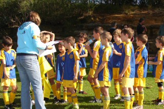
Shannon was onto the ball in his usual terrier-fashion and moved the ball down his
favourite left-wing side with terrific speed. Charlie, having served his time in goals
and on the bench, made the most of his time on the field with some great dribbling
and moving the ball into the danger zone. Things were starting to warm up again for
North Ryde.
The second goal came midway through the second half in a similar fashion to their
first. Moving the ball effectively from player to player again bore dividends as
Adam, for the second time in the game, was the final link in the passing chain to
finish off the movement with a well-timed and stylish kick into the bottom right
corner of the goals. Great goal!
To their credit, the Ravens did not take the 2-0 scoreline lying down and lifted
their game to launch a series of attacks against the North Ryde goal, ultimately
finding success deep in the second half when a forward took advantage of a loose
ball and worked it into the back of the North Ryde nets. Well done to them.
Despite losing some impetus after the Ravens goal, North Ryde stuck to their guns
and levelled the run of play to a point where they were still having a go at the
opposition goal within the closing minutes. There were a lot of sweaty faces that
left the field at the end of the game despite the cool weather, and their 2-1
success against a worthy opponent is a tribute to their determination and
competitive natures.
Well done North Ryde!
- Mark Howard (Linesman)
|
|
|
|
|
|
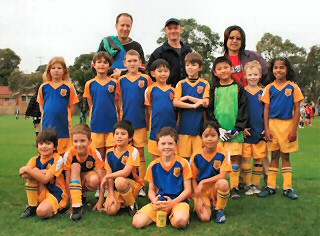
An early start and a lovely cool morning greeted us all on Saturday. The kids were keen
to play after a wash-out the week before.
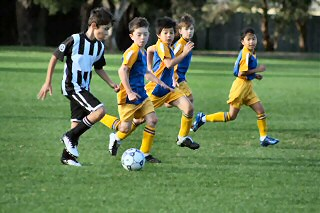
Straight from the start the Ravens had us on the back foot. Kicking their first goal
within the first few minutes and a second not much long after.
The team was a bit shell-shocked but pressed on... defending their own goals for most
of the first half. The score at half-time was 5 - 0 Ravens way.
After the half-time pep talk the kids played a stronger more motivated second half,
with most of the half being played around the centre circle.
There were many unsuccessful attemps at goal from both teams which reflected in the
second-half score, which was only 1 - 0 to the Ravens.
Overall score was Ravens 6, North Ryde 0. Well played team, better luck next game
- Scott MacCue (Coach)
|
|
|
|
|
|
Whether it was the fact that it was a little cooler this morning or that some scout
leaked a secret to our team that the opposition (OLHC Epping) was undefeated - I am
not sure - whatever it was, the mighty NRSC Under 9 Div 6s were a little slow out of
the blocks and 40 seconds after 'special guest' referee
Tony's opening whistle, we found ourselves 1-0 down!
Then, they popped in another soft goal and those on the sideline we were wondering
if it would be a cricket score! It was not to be! From then on our guys 'n gals
really shone. It was tense end-to-end stuff and some of the tackles were not for
the faint hearted.
Special mention goes to Maggie who bravely took up the
No. 1 jersey in the first half and after a few tries slotted a wonderful team goal
in the second half
We can take some real positives out of this game as we actually won the second half
1 - 0, thanks to some very strong defending from Thomas,
Julian and Chris.
Benyad kept a clean sheet with some wonderful saves and
man of the match Luke was very impressive with a few solid
shots on goal - only to be thwarted time and again by their very strong goalie.
Well done to everyone - we didn't win - except if you don't count the first half -
and everyone had fun which is the main thing.
- Andrew Curdie (Coach)
|
|
|
|
|
|
Once again the team got off to a bad start conceding a goal before the spectators
had a chance to focus on the field. A second goal followed soon after before the
team once again seemed to find some cohesion and made the opposition fight hard
for the remainder of the first half going to the break 4 goals down.
The early part of the second half belonged to our boys and they managed to pull
back a good goal scored by Lewis B after some good lead up work by the mid field
and a nice pass from William G who was having a break from goalkeeping. William
was ably replaced by Tyrone P from the Under 14 side who was given several
opportunities to show his goalkeeping skills in a higher grade and he certainly
acquitted himself well as did the other 2 Under 14 players who helped out on the
day Robert J and Mitchell K. Thanks boys for your efforts and thank you to your
parents for bringing you along.
Despite the scoreline the boys never gave up and competed to the final whistle.
- Bill Greer (Manager)
|
|
|
|
|
|
It was a dodgy day to say the least, the rain had been intermittent for days and there
were some definite grey clouds around today. The game was also being played at Santa
Rosa Park, which when we arrived, looked soggy and muddy down one side of the park.
Would the boys be able to handle the wet conditions? A win today could see them move
into the top two, depending on goal difference. With 4 players out would the boys be
able to run all day without as many super subs as they usually had?
The ref blew time on and immediately Nth Ryde applied the pressure, Brownie put a
great ball through to Pommie Pete but in the wet Pommie found it hard to get going
and the ball had a little too much on it for him to bring it under control and make
any sort of shot on goal. Nth were able to win a few corners out of the first ten
minutes of the game and looked likely to score. Macca had been secretly practicing
his headers all week after watching the champions league final (thinking he could
emulate Messi's great header) so his first touch on the ball was an attempted header
on goal. Unfortunately he didn't get enough on it and the keeper cleaned up the spoils.
Higgo thought he could go one better and the ball hit the cross bar. Macca then had
another, much better header attempt but the keeper got his fingers to it and saved it.
The disappointment on his face! The good thing was with all these attempts on goal,
NHFC hadn't even been in Nth Ryde's half. Col then had his chance with another great
hit on goal but only managed to find the waiting arms of the keeper. If Nth were going
to keep up this sort of pressure, the results would come.
Finally (well not really wanting them to), NHFC has some time in the Nth Ryde half.
Smithy was as ever brilliant in defence & was backed up very well in the midfield by
Col who was finding space down the right wing. Browny was also backing up well and his
clearances had some pinpoint accuracy to them. Finally Higgo got onto the end of a pass
and put the most fantastic ball through to the flying Dutchman who scored, 1-0 Nth Ryde.
The rain started coming down in buckets and the report was interrupted momentarily. The
rain also made the ball a lot heavier and with every pass came a ball that landed dead
in the mud. It seemed to be difficult to play, not knowing of the ball was going to
skid on or stop dead. NHFC's tactics seemed to change and a player or two seemed to
have a 'sniper in the bushes problem'! Higgo got hit in the head but recovered well.
Col then put a lovely ball through to Higgo who had a shot on goal which was again
saved by the keeper. NHFC cleared to a waiting Smithy who then passed a great ball
onto Pommies' feet but Pommie just kicked it a little too far ahead of himself. He
chased the ball down and managed to work a corner out of NHFC. The corner was taken
and Dutchie blocked the ball with his body, passed it onto Pierre who kicked the ball
into the bottom left hand corner of the net. Well done Nth, half time with a 2-0 lead.
Considering the conditions, this was a good lead to have at half time.
The players took the field to begin the second half, Pierre applied early pressure but
NHFC had seemed to regroup and had some early shots on goal which Agro saved with ease.
The ball moved up and down the park and was getting wetter and heavier with each shower
that passed overhead. The game was frustrating the crown as Nth were missing some easy
opportunities to score. The game turned into a sliding competition and I was very glad
I was not taking the shirts home to wash this week! Some notable plays by Col, Ando and
Pommie were keeping Nth Ryde on the attack. Nth should have been more than 2-0 up at
this stage and I was hoping the chances they had missed would not mean defeat or goals
scored against them. Nth kept applying the pressure and late in the game the ball
rebounded back to Ando who was waiting about 40 feet out from goal, he decided take
his chance as Ronaldo and hit the ball hard, the ball hit the right hand goal post and
rebounded into the goal! I still think Firgal's goal three weeks ago was the goal of
the season so far, but Ando's goal was now definitely in the running (or so he would
repeatedly tell us after the game!). He was remarkably happy with himself as was his
team!
That ended a soggy, wet, but good day out for Nth Ryde with a 3-0 win that will see
them move up the ladder. Sorry I won't be at the 9am Sunday game at Holland Park this
week boys, the Wildcatz are playing at Nth Ryde oval at 9am and I'll go for the sleep in!
Good luck and play hard
- Lhan Gannon (Reporter)
|